Utganger¶
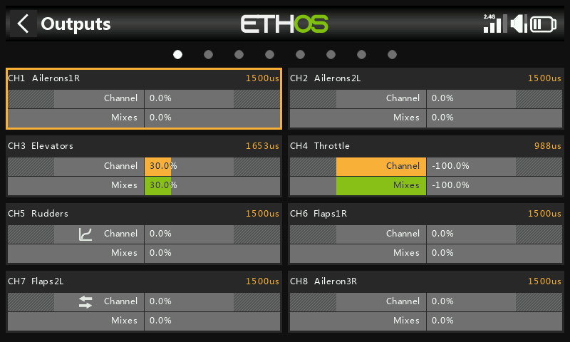
Utganger er grensesnittet mellom den rene «logikken» i Mikser og den fysiske verden — servoer, styrestenger, styreflater, aktuatorer og givere. Det er her endepunkter, reversering, sentrering og korreksjonskurver tilpasses det modellen faktisk trenger mekanisk. Hver utgangskanal svarer til en servoutgang på mottakeren (CH1 → servokontakt nr. 1, med standard protokollinnstillinger).
Ethos arbeider i prosent, men servoer styres til syvende og sist av PWM-pulsbredde i mikrosekunder:
| % | µs |
|---|---|
| −150 % | 732 |
| −100 % | 988 |
| 0 % | 1500 |
| 100 % | 2012 |
| 150 % | 2268 |
Warning
En kanal uten aktiv miks sender ut nøytral verdi (0 % / 1500 µs) — dette gjelder også en kanal der den eller de eneste miksene for tiden er inaktive. Sørg for at hver kanal du faktisk bruker alltid har en aktiv miks bak seg. På en gasskanal betyr nøytral verdi halv gass.
Skjermen Utganger viser to søyler per kanal: den nederste (grønne) søylen er mikserens verdi for kanalen, den øverste (oransje) søylen er verdien etter Utganger som faktisk sendes til mottakeren (både i % og µs). Min/Maks-grenser vises som nedtonede deler av den oransje søylen. Kanaler som ikke sendes til RF-modulen for tiden, har mørkere bakgrunn. Små ikoner vises på en kanal når innstillingene Retning, Kurve, Sakte eller Balanse er endret fra standard, slik at du raskt kan se hvilke kanaler som avviker fra standard.
Tip
Et langt trykk på ENT fra enten Mikser- eller Flymodus-skjermen tar deg
rett hit.
Redigere en kanal¶
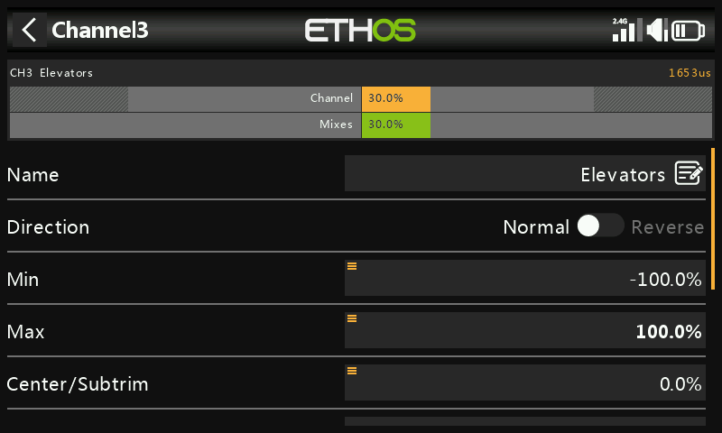
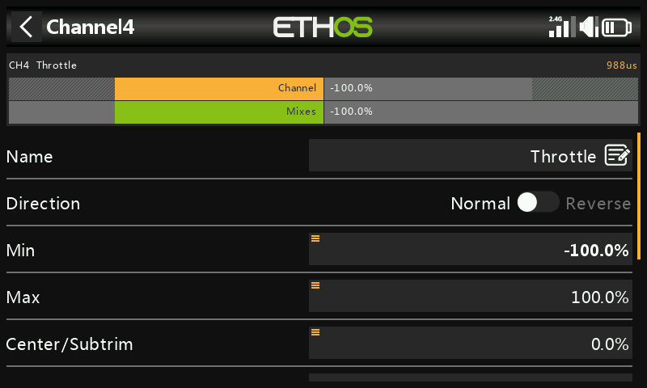
Trykk på en kanal for å åpne den. En forhåndsvisning øverst viser miksverdien (grønn) mot utgangsverdien (oransje), med en liten hvit markør for Min/Maks-punktene.
- Navn — kan redigeres.
- Retning — reverserer kanalens utgang, typisk for å reversere servoens rotasjonsretning. Vises som et dobbeltpil-ikon på kanalen. Dette påvirker ikke miksene som mater kanalen, og bytter ikke om Min/Maks-grensene.
- Min/Maks — absolutte grenser som aldri overstyres — settes for å unngå mekanisk kollisjon. De fungerer som innstillinger for endepunkt/utslag: å redusere dem reduserer utslaget i stedet for å klippe signalet. Standard er ±100 %, justerbart opp til ±150 %. Under justering vises den enden som du for tiden beveger deg mot, i fet skrift (f.eks. skyv høyderorspaken forover, og Maks-verdien blir fet, som bekreftelse på at det er denne enden du stiller inn).
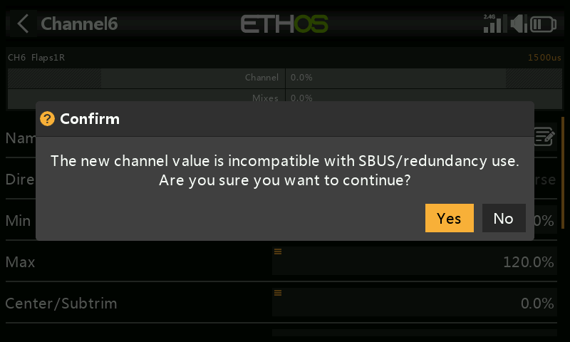
!!! warning "SBUS-redundans" Et redundansoppsett som bruker SBUS kan ikke bevege en servo utover omtrent ±125 %. Selve Min/Maks-feltene har asymmetriske områder (−150–0 % og 0–150 %) — hvis de styres fra en Var, må du gi denne Var-en et identisk område eller aktivere Ignorer område (se kildealternativer), ellers vil den automatiske områdeomregningen gi uventede verdier. Hvis hovedmottakerens utgang overskrider 125 % og den går i failsafe, vil den redundante mottakeren som tar over via SBUS begrense den tilbake til 125 %.
- Senter/Subtrim — forskyver utgangen, typisk for å sentrere en servoarm; endepunktene påvirkes ikke.
!!! warning Ikke bruk subtrim til store forskyvninger — det bygger inn betydelig differensial i servoens respons. Bruk i stedet en offset-miks til alt som går utover finsentrering.
- PWM-senter — som subtrim, men forskyver hele servoens vandringsområde inkludert de absolutte grensene, utført reelt inne i selve servoen i stedet for å vises i kanalovervåkeren. Dette holder mekanisk sentrering atskilt fra trimming.
- Kurve — knytter en Expo-kurve eller egendefinert kurve (eksisterende eller ny, med en Rediger-snarvei når den er satt) til kanalen for å korrigere respons i praksis — f.eks. for å holde venstre/høyre flaps nøyaktig i takt. Vises som et kurveikon på kanalen.
- Sakte opp/ned — gjør utgangens respons på inngangsendringer langsommere, angitt i sekunder for å bevege seg 0→100 % — f.eks. for å gjøre innfellbart understell drevet av en vanlig proporsjonal servo langsommere. Vises som et klokkeikon på kanalen. (En forsinkelse, til forskjell fra sakte, er tilgjengelig under logiske brytere.)
Bytt kanaler¶
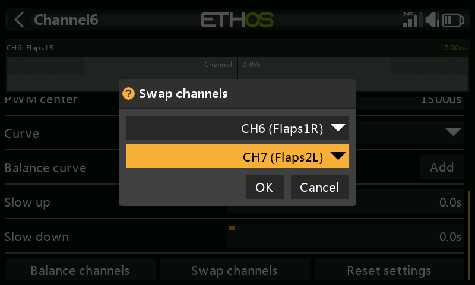
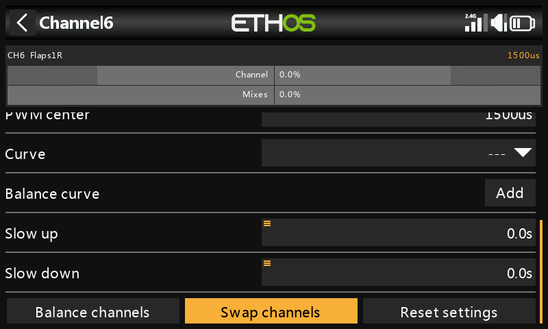
Bytter om to utgangskanaler. Dialogen åpnes med gjeldende kanal utfylt på forhånd; velg den andre og bekreft — byttet skjer umiddelbart, og alle mikser som refererer til én av kanalene oppdateres tilsvarende.
Nullstill innstillinger¶
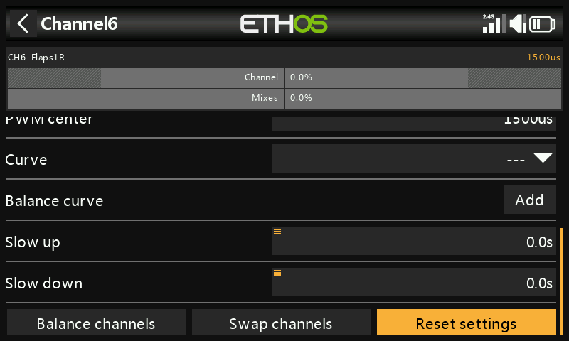
Tilbakestiller alle parametere på en kanal til standardverdiene — nyttig før du tar en kanal i bruk til noe annet, med en bekreftelsesdialog for å unngå uhell.
Balanser kanaler¶
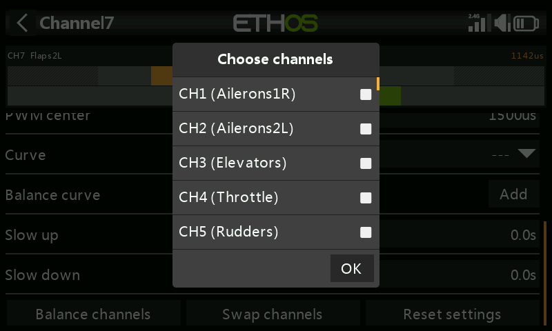
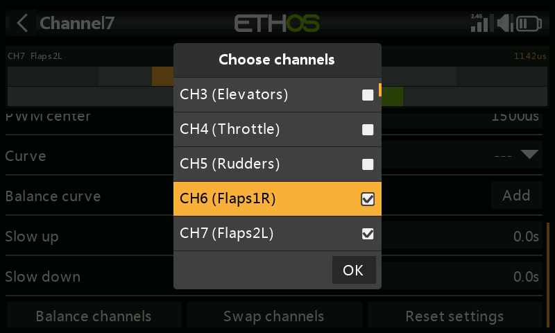
Balanserer et par (eller opptil 4) kanaler slik at de beveger seg i takt — f.eks. kan flaps som ikke beveger seg likt gi uønsket rull, og ubalanserte gasspådrag på en flermotors modell kan gi uønsket gir. Ethos bygger en differensial balansekurve for hver valgte kanal; ved å sammenligne de fysiske styreflateposisjonene i hvert kurvepunkt kan du justere dem til å stemme overens, med perfekt samsvarende styreflater som resultat.
Før balansering, i denne rekkefølgen:
- Still inn servoretninger for korrekt bevegelse.
- Med miksene i nøytral kan du eventuelt bruke PWM-senter til å rette opp servoarmene.
- Still inn Min/Maks og Subtrim.
- Konfigurer eventuelle andre kurver.
- Konfigurer Sakte.
- Deretter balanserer og utjevner du over hele vandringsområdet.
Bruk: velg kanalene som skal balanseres og rekkefølgen de skal vises i —
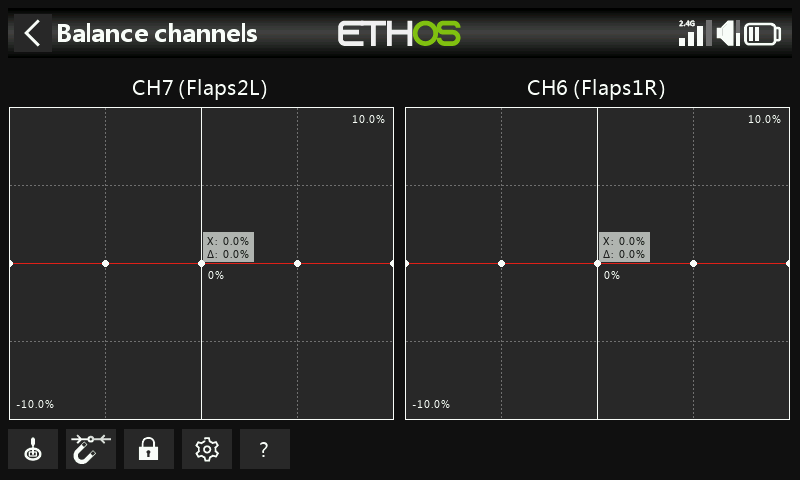
— miksutgang på X-aksen, differensial for balansejustering på Y-aksen. Trykk
på en kanals graf (eller velg den og trykk ENT) for å redigere kanalens
balansekurve; PAGE bytter mellom kanaler underveis i redigeringen:
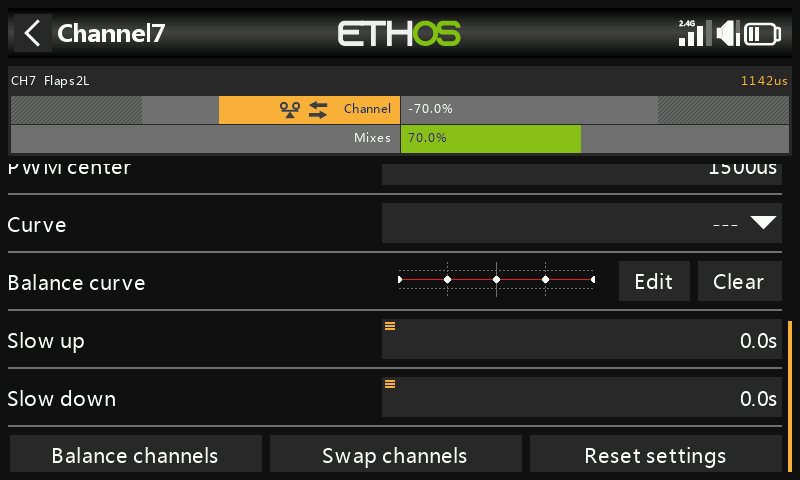
Kontroller i redigeringsvinduet:
- Kilde — normalt miksens egen kilde (eller kilder), eller en annen praktisk analog inngang; Automatisk analog inngang fanger opp den første spaken/glidebryteren/potensiometeret du beveger som X, både i grafen og i selve modellen.
- Magnet — låser rotasjonsenkoderens justering automatisk til nærmeste kurvepunkt på X-aksen:
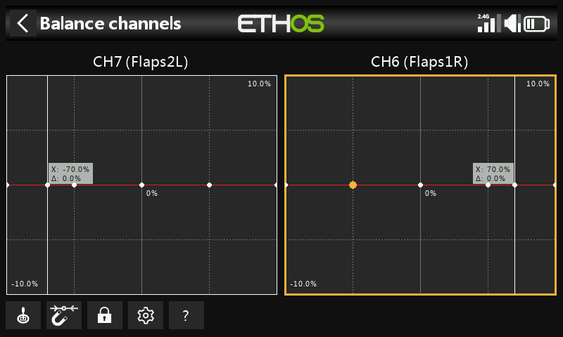
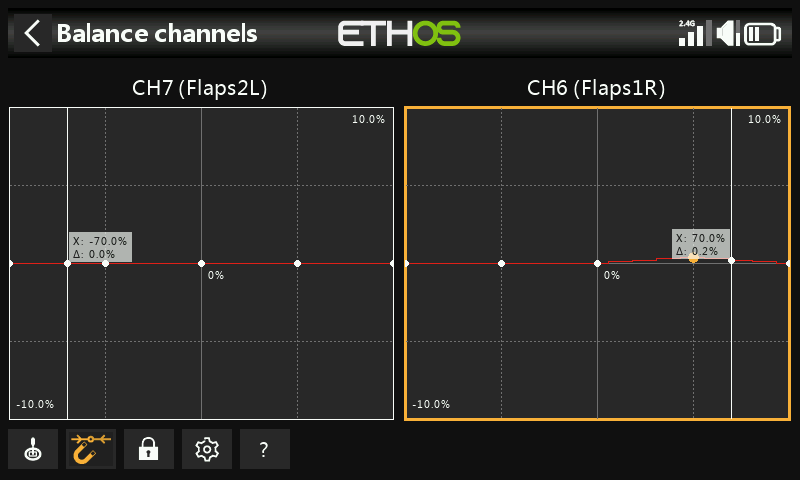
Inngangen må fortsatt beveges for å innrette X med et kurvepunkt før det
kan justeres.
- Lås — slås av og på ved å trykke på ikonet eller trykke ENT i
grafredigeringsmodus; låser alle innganger slik at du kan slippe spaken og
observere styreflatene mens du justerer kurven.
- Konfigurasjon — endre antall punkter per kanal (alle eller enkeltvis)
og om hver kurve skal utjevnes.
- Hjelp (?, også MDL-tasten) — åpner den innebygde hjelpen.
Flerkanals: opptil 4 kanaler kan balanseres sammen —
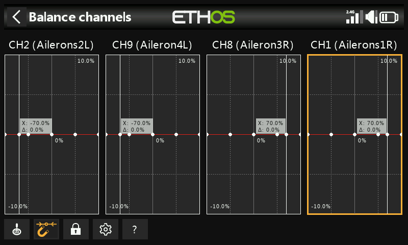
Når den er satt, kan en balansekurve gjennomgås, redigeres eller slettes fra kanalens egen konfigurasjonsside — et balanseikon markerer den på kanalgrafen (sammen med et retningsikon, dersom også dette avviker fra standard).